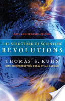

books.google.es - A good book may have the power to change the way we see the world, but a great book actually becomes part of our daily consciousness, pervading our thinking to the point that we take it for granted, and we forget how provocative and challenging its ideas once were—and still are. The Structure of Scientific...http://books.google.es/books/about/The_Structure_of_Scientific_Revolutions.html?id=3eP5Y_OOuzwC&utm_source=gb-gplus-shareThe Structure of Scientific Revolutions
Page iii
50th Anniversary Edition Thomas S. Kuhn. FOURTH EDITION THOMAS S. KUHN
The University of Chicago Press Chicago and London Thomas S. Kuhn (1922–
96) was the Laurence Rockefeller Professor Emeritus. The Structure of Scientific
...
Page iv
50th Anniversary Edition Thomas S. Kuhn. Thomas S. Kuhn (1922–96) was the
Laurence Rockefeller Professor Emeritus of linguistics and philosophy at the
Massachusetts Institute ofTechnology. His books include The Essential Tension;
...
Page v
50th Anniversary Edition Thomas S. Kuhn. Contents Introductory Essay by Ian
Hacking vii Preface xxxix I Introduction: A Role for History 1 II The Route to
Normal Science 10 III The Nature ofNormal Science 23 IV Normal Science as ...
Page vii
These remarks introduce the book, not Kuhn and his life work. He usually
referred to the book as Structure, and in conversation simply as “the book.” I
follow his usage. The Essential Tension is a superb collection of philosophical (
as opposed ...
Page viii
The book launched a fleet ofbooks about Kuhn's life and work. An excellent short
introduction to the work of Thomas Samuel Kuhn (1922–94), with a different slant
from this one, is to be found in the online Stanford Encyclopedia ofPhilosophy.3 ...
Page ix
The queen of the sciences, then, was physics. Kuhn had been trained as a
physicist. Few people knew much physics, but everybody knew that physics was
where the action was. A cold war was in progress, so everyone knew about the
Bomb.
Page x
50th Anniversary Edition Thomas S. Kuhn. there were competing cosmologies:
steady state and big bang, two completely different pictures of the universe and
its origin. After 1965 and the almost fortuitous discovery of universal background
...
Page xi
called these sections, not chapters, for he thought of Structure as more ofa book
outline than a book); (2) puzzle-solving (§IV); (3) paradigm (§V), a word which,
when he used it, was rather uncommon, but which after Kuhn has become banal
...
Page xii
50th Anniversary Edition Thomas S. Kuhn. overthrown; a new world order begins.
The first thinker to extend this notion of revolution to the sciences may have been
Immanuel Kant. He saw two great intellectual revolutions. They are not ...
Page xiii
Francis Bacon was its prophet, Galileo its lighthouse, and Newton its sun. A first
point to notice—one that is not immediately obvious on a first skimming of
Structure—is that Kuhn was not talking about the scientific revolution. That was
quite a ...
Page xiv
50th Anniversary Edition Thomas S. Kuhn. Then there was the quantum
revolution, also a two-stage affair, with Max Planck's introduction of quanta
around 1900 and then the full quantum theory of 1926–27, complete with
Heisenberg's ...
Page xv
50th Anniversary Edition Thomas S. Kuhn. took physics as their prototype for all
the sciences and formed their ideas in the aftermath of relativity and quanta. The
sciences look different today. In 2009 the 150th anniversary of Darwin's The ...
Page xvi
50th Anniversary Edition Thomas S. Kuhn. puzzles, jigsaw puzzles, and sudoko,
pleasant ways to keep busy when one is not up to useful work. Is normal science
like that? A lot of scientific readers were a bit shocked, but then had to admit that
...
Page xvii
Immense experimental or instrumental novelty is simply missed in Kuhn's
theoretical stance, so normal science may have a great deal of novelty, just not
theoretical. And for the general public, which wants technologies and cures, the
novelties ...
Page xviii
50th Anniversary Edition Thomas S. Kuhn. ample is the central element of what I
now take to be the most novel and least understood aspect ofthis book” (186). On
the same page he suggested exemplar as a possible substitute word.
Page xix
I shall come back to local and global but first some recapturing. Nowadays
paradigm, along with its companion paradigm shift, is embarrassingly
everywhere. When Kuhn wrote, few people had ever encountered it. Soon it
became trendy.
Page xx
50th Anniversary Edition Thomas S. Kuhn. ample about which almost everyone
in the audience will agree—a paradigm. The implication is that what is in dispute
is “just like that.” In Latin translations of Aristotle, paradeigma became exemplum,
...
Page xxi
I do not know when Kuhn first read Wittgenstein, but first at Harvard and then at
Berkeley, he had many a conversation with Stanley Cavell, a fascinatingly
original thinker who was deeply immersed in Wittgenstein. Each acknowledged
the ...
Page xxii
Kuhn became increasingly interested in events much smaller in scope, which
pertained to small communities of workers. There are very large scientific
communities—genetics, or condensed-matter (solid-state) physics, for example.
But within ...
Page xxiii
50th Anniversary Edition Thomas S. Kuhn. tific community, continues as long as
there is plentyto do, open problems which yield to research using methods (laws,
instruments, etc.) acknowledged by the tradition. By the end of page 12 we are ...
Page xxiv
50th Anniversary Edition Thomas S. Kuhn. the ends of the chapters. You have to
learn that a group of these problems, seemingly disparate, can be solved by
using similar techniques. In solving those problems you grasp how to carry on
using ...
Page xxv
50th Anniversary Edition Thomas S. Kuhn. size the way in which, when a
paradigm is threatened by crisis, the community itself is in disarray. There are
moving quotations from Wolfgang Pauli on page 84, one a few months before ...
Page xxvi
Anomaly (§VI) The full title of this section is “Anomaly and the Emergence of
Scientific Discoveries.” Section VII has a parallel title: “Crisis and the Emergence
of Scientific Theories.” These odd pairings are integral to Kuhn's account of
science.
Page xxvii
Crisis (§§VII–VIII) Crisis and theory change also go hand in hand. Anomalies
become intractable. No amount of tinkering will fit them into established science.
But Kuhn is adamant that this does not, in itself, lead to rejection of existing theory
.
Page xxviii
Kuhn wanted to say something more interesting. After a revolution, scientists, in
the field that has been changed, work in a different world. The more cautious
among us will say that is just a metaphor. Speaking literally, there is just one
world, ...
Page xxix
50th Anniversary Edition Thomas S. Kuhn. In the second quotation he hedges, “in
the absence of some re- course to that hypothetical fixed nature that [Lavoisier] '
saw differently' ” we will want to say that “Lavoisier worked in a different world” ...
Page xxx
When Structure was being written, Kuhn was at Berkeley. I have mentioned
Stanley Cavell as a close colleague. There was also the iconoclast Paul
Feyerabend, best known for his book Against Method (1975) and its apparent
advocacy of ...
Page xxxi
50th Anniversary Edition Thomas S. Kuhn. remembers from Newton isf = ma. The
only one from Einstein is E = mc2. But the latter makes no sense in classical
mechanics. Hence (some urged) you cannot really compare the two theories, and
...
Page xxxii
50th Anniversary Edition Thomas S. Kuhn. usually close to nonsense to speak of
an investigator choosing a theory within which to work. Initiates entering graduate
school or postdocs have to choose the lab in which they will master the tools of ...
Page xxxiii
50th Anniversary Edition Thomas S. Kuhn. own achievements on which research
is modeled, it becomes increasingly difficult for practitioners of one to understand
what the other is doing. This is not a deep metaphysical point; it is a familiar ...
Page xxxiv
50th Anniversary Edition Thomas S. Kuhn. incommensurability. After a revolution
there maybe a substantial shift in topics studied, so that the new science simply
does not address all the old topics. It may modify or drop many of the concepts ...
Page xxxv
50th Anniversary Edition Thomas S. Kuhn. practitioners, who might proudly
proclaim themselves to be atheists, take for granted that there just is, waiting to
be discovered, one full and complete account of nature. If you think that makes
sense, ...
Page xxxvi
Many reflective scientists, who admire much of what Kuhn says about the
sciences, believe he encouraged deniers. It is true that Structure gave enormous
impetus to sociological studies of science. Some of that work, with its emphasis
on the ...
Page xxxvii
50th Anniversary Edition Thomas S. Kuhn. of editors and advisors were listed.
Most are rather well known even fifty years later—Alfred Tarski, Bertrand Russell,
John Dewey, Rudolf Carnap, Neils Bohr. The Encyclopedia was part ofa project ...
Page xl
50th Anniversary Edition Thomas S. Kuhn. led me to history. Except for a few
articles, this essay is the first of my published works in which these early
concerns are dominant. In some part it is an attempt to explain to myself and to
friends how I ...
Page xli
50th Anniversary Edition Thomas S. Kuhn. me to B. L. Whorf's speculations about
the effect of language on world view; and W. V. O. Quine opened for me the
philosophical puzzles of the analytic-synthetic distinction.3 That is the sort of
random ...
Page xliv
50th Anniversary Edition Thomas S. Kuhn. like a paradigm; there are
circumstances, though I think them rare, under which two paradigms can coexist
peacefully in the later period. Mere possession of a paradigm is not quite a
sufficient ...
Page xlvi
50th Anniversary Edition Thomas S. Kuhn. munication attests an understanding
that has enabled him to point me the way through or around several major
barriers encountered while preparing my first manuscript. Since that version was
...
Page 3
50th Anniversary Edition Thomas S. Kuhn. thermodynamics, the more certain
they feel that those once current views of nature were, as a whole, neither less
scientific nor more the product of human idiosyncrasy than those current today.
Page 7
50th Anniversary Edition Thomas S. Kuhn. the study of many other episodes that
were not so obviously revolutionary. For the far smaller professional group
affected by them, Maxwell's equations were as revolutionary as Einstein's, and
they ...
Page 10
50th Anniversary Edition Thomas S. Kuhn. [II]. The. Route. to. Normal. Science. In
this essay, 'normal science' means research firmly based upon one or more past
scientific achievements, achievements that some particular scientific ...
Page 14
50th Anniversary Edition Thomas S. Kuhn. The history of electrical research in
the first half of the eighteenth century provides a more concrete and better known
example of the way a science develops before it acquires its first universally ...
Page 15
50th Anniversary Edition Thomas S. Kuhn. repulsion of two negatively charged
bodies.) But they had as much difficulty as the first group in accounting
simultaneously for any but the simplest conduction effects. Those effects,
however, provided ...
Page 19
50th Anniversary Edition Thomas S. Kuhn. We shall be examining the nature of
this highly directed or paradigm-based research in the next section, but must first
note briefly how the emergence of a paradigm affects the structure of the group ...
Page 21
50th Anniversary Edition Thomas S. Kuhn. bility only briefly during the early
seventeenth century when a new paradigm replaced the one that had guided
medieval research. Electrical research began to require translation for the
layman ...
Page 25
50th Anniversary Edition Thomas S. Kuhn. drastically restricted vision. But those
restrictions, born from confidence in a paradigm, turn out to be essential to the
development of science. By focusing attention upon a small range of relatively ...
Page 27
50th Anniversary Edition Thomas S. Kuhn. can be demonstrated at all presents a
constant challenge to the skill and imagination of the experimentalist and
observer. Special telescopes to demonstrate the Copernican prediction of annual
...
Page 29
50th Anniversary Edition Thomas S. Kuhn. regularity at all.) But that design, in
turn, depended upon the previous recognition that every particle of electric fluid
acts upon every other at a distance. It was for the force between such particles—
the ...
Page 30
50th Anniversary Edition Thomas S. Kuhn. ments and in the interpretation of
results.8 Once the phenomenon of heating by compression had been
established, all further experiments in the area were paradigm-dependent in this
way. Given the ...
Page 31
50th Anniversary Edition Thomas S. Kuhn. derived the results of some scattered
observations on pendulums and the tides. With the aid of additional but ad hoc
assumptions, he had also been able to derive Boyle's Law and an important ...
Page 37
50th Anniversary Edition Thomas S. Kuhn. that special category of problems that
can serve to test ingenuity or skill in solution. Dictionary illustrations are 'jigsaw
puzzle' and 'crossword puzzle,' and it is the characteristics that these share with ...
Page 40
50th Anniversary Edition Thomas S. Kuhn. not to solve the old one. In the event,
scientists preserved the rules until, in 1750, one of them discovered how they
could successfully be applied.3 Only a change in the rules of the game could
have ...
Page 42
50th Anniversary Edition Thomas S. Kuhn. cal change.10 Similar effects of
corpuscularism can be observed in the study of mechanics, optics, and heat.
Finally, at a still higher level, there is another set of commitments without which
no man is ...
Page 43
50th Anniversary Edition Thomas S. Kuhn. [V]. The. Priority. of. Paradigms. To
discover the relation between rules, paradigms, and normal science, consider
first how the historian isolates the particular loci of commitment that have just
been ...
Page 50
50th Anniversary Edition Thomas S. Kuhn. exposure to quite different
achievements described in very different books. And even men who, being in the
same or in closely related fields, begin by studying many of the same books and
...
Page 51
50th Anniversary Edition Thomas S. Kuhn. tion, but their answers were not the
same. For the chemist the atom of helium was a molecule because it behaved
like one with respect to the kinetic theory of gases. For the physicist, on the other
...
Page 52
50th Anniversary Edition Thomas S. Kuhn. [VI]. Anomaly. and. the. Emergence. of
. Scientific. Discoveries. Normal science, the puzzle-solving activity we have just
examined, is a highly cumulative enterprise, eminently successful in its aim, the ...
Page 53
50th Anniversary Edition Thomas S. Kuhn. sidering first discoveries, or novelties
of fact, and then inventions, or novelties of theory. That distinction between
discovery and invention or between fact and theory will, however, immediately
prove ...
Page 57
50th Anniversary Edition Thomas S. Kuhn. part of what enabled Lavoisier to see
in experiments like Priestley's a gas that Priestley had been unable to see there
himself. Conversely, the fact that a major paradigm revision was needed to see ...
Page 58
50th Anniversary Edition Thomas S. Kuhn. novelty. But, again in both cases, the
perception that something had gone wrong was only the prelude to discovery.
Neither oxygen nor X-rays emerged without a further process of experimentation
...
Page 65
50th Anniversary Edition Thomas S. Kuhn. the observation-theory match that
could be achieved in no other way. Furthermore, that detail and precision-of-
match have a value that transcends their not always very high intrinsic interest.
Without ...
Page 66
50th Anniversary Edition Thomas S. Kuhn. [VII]. Crisis. and. the. Emergence. of.
Scientific. Theories. All the discoveries considered in Section VI were causes of
or contributors to paradigm change. Furthermore, the changes in which these ...
Page 67
50th Anniversary Edition Thomas S. Kuhn. then invented it has its attractions.
Oxygen has already been encountered as discovery; we shall shortly meet it
again as invention.) In taking up the emergence of new theories we shall
inevitably ...
Page 69
50th Anniversary Edition Thomas S. Kuhn. time went on, a man looking at the net
result of the normal research effort of many astronomers could observe that
astronomy's complexity was increasing far more rapidly than its accuracy and that
a ...
Page 74
50th Anniversary Edition Thomas S. Kuhn. Maxwell's electromagnetic theory in
the last two decades of the nineteenth century. Maxwell himself was a Newtonian
who believed that light and electromagnetism in general were due to variable ...
Page 75
50th Anniversary Edition Thomas S. Kuhn. the concomitant of crisis.14 It is
against that historical setting that Einstein's special theory of relativity emerged in
1905. These three examples are almost entirely typical. In each case a novel
theory ...
Page 76
50th Anniversary Edition Thomas S. Kuhn. after Aristarchus' proposal. Besides,
there were no obvious reasons for taking Aristarchus seriously. Even Copernicus'
more elaborate proposal was neither simpler nor more accurate than Ptolemy's ...
Page 78
50th Anniversary Edition Thomas S. Kuhn. scientists to reject a previously
accepted theory is always based upon more than a comparison of that theory
with the world. The decision to reject one paradigm is always simultaneously the
decision ...
Page 79
50th Anniversary Edition Thomas S. Kuhn. fixed proportion, which before Dalton
was an occasional experimental finding of very dubious generality, became after
Dalton's work an ingredient of a definition of chemical compound that no ...
Page 81
50th Anniversary Edition Thomas S. Kuhn. tives have they, or what competence?
The applications given in texts are not there as evidence but because learning
them is part of learning the paradigm at the base of current practice. If
applications ...
Page 82
50th Anniversary Edition Thomas S. Kuhn. relativity after a crisis that it had had
no role in creating.4 Apparently neither had seemed sufficiently fundamental to
evoke the malaise that goes with crisis. They could be recognized as ...
Page 83
50th Anniversary Edition Thomas S. Kuhn. sition to crisis and to extraordinary
science has begun. The anomaly itself now comes to be more generally
recognized as such by the profession. More and more attention is devoted to it by
more and ...
Page 84
50th Anniversary Edition Thomas S. Kuhn. anywhere, upon which one could
have built.”6 And Wolfgang Pauli, in the months before Heisenberg's paper on
matrix mechanics pointed the way to a new quantum theory, wrote to a friend, “At
the ...
Page 88
50th Anniversary Edition Thomas S. Kuhn. This sort of extraordinary research is
often, though by no means generally, accompanied by another. It is, I think,
particularly in periods of acknowledged crisis that scientists have turned to ...
Page 89
50th Anniversary Edition Thomas S. Kuhn. the awareness of crisis distinguishes
Lavoisier's work on oxygen from Priestley's; and oxygen was not the only new
gas that the chemists aware of anomaly were able to discover in Priestley's work.
Page 92
50th Anniversary Edition Thomas S. Kuhn. [IX]. The. Nature. and. Necessity. of.
Scientific. Revolutions. These remarks permit us at last to consider the problems
that provide this essay with its title. What are scientific revolutions, and what is
their ...
Page 97
50th Anniversary Edition Thomas S. Kuhn. lem defined by existing knowledge
and technique is not, however, just looking around. He knows what he wants to
achieve, and he designs his instruments and directs his thoughts accordingly.
Page 104
50th Anniversary Edition Thomas S. Kuhn. these subtler effects of paradigm shift.
Before Newton was born the “new science” of the century had at last succeeded
in rejecting Aristotelian and scholastic explanations expressed in terms of the ...
Page 111
50th Anniversary Edition Thomas S. Kuhn. [X]. Revolutions. as. Changes. of.
World. View. Examining the record of past research from the vantage of
contemporary historiography, the historian of science may be tempted to exclaim
that when ...
Page 116
50th Anniversary Edition Thomas S. Kuhn. less attempts to fit the observed
motion to a cometary orbit, did Lexell suggest that the orbit was probably
planetary.4 When that suggestion was accepted, there were several fewer stars
and one more ...
Page 117
50th Anniversary Edition Thomas S. Kuhn. examples of celestial change to
emerge in the heavens of Western as- tronomy immediately after Copernicus.
Using traditional instruments, some as simple as a piece of thread, late sixteenth-
century ...
Page 122
50th Anniversary Edition Thomas S. Kuhn. being an interpreter, the scientist who
embraces a new paradigm is like the man wearing inverting lenses. Confronting
the same constellation of objects as before and knowing that he does so, ...
Page 123
50th Anniversary Edition Thomas S. Kuhn. new paradigm is born. Though such
intuitions depend upon the experience, both anomalous and congruent, gained
with the old paradigm, they are not logically or piecemeal linked to particular
items ...
Page 127
50th Anniversary Edition Thomas S. Kuhn. with fascinating results. There can be
no question that efforts of this sort are worth pursuing. But their result is a
language that—like those employed in the sciences—embodies a host of
expectations ...
Page 139
50th Anniversary Edition Thomas S. Kuhn. causes bodies to fall.2 By crediting to
Galileo the answer to a question that Galileo's paradigms did not permit to be
asked, Newton's account hides the effect of a small but revolutionary
reformulation ...
Page 141
50th Anniversary Edition Thomas S. Kuhn. book presentation upon our image of
scientific development. Every elementary chemistry text must discuss the concept
of a chemical element. Almost always, when that notion is introduced, its origin ...
Page 148
50th Anniversary Edition Thomas S. Kuhn. lution. That loss was not, however,
permanent either. In the twentieth century questions about the qualities of
chemical substances have entered science again, together with some answers to
them.
Page 153
50th Anniversary Edition Thomas S. Kuhn. digm displays a quantitative precision
strikingly better than its older competitor. The quantitative superiority of Kepler's
Rudolphine tables to all those computed from the Ptolemaic theory was a major ...
Page 154
50th Anniversary Edition Thomas S. Kuhn. the new theory a great many converts,
particularly among nonastronomers.12 In the case of the wave theory, one main
source of professional conversions was even more dramatic. French resistance ...
Page 164
50th Anniversary Edition Thomas S. Kuhn. mer almost never do, to defend their
choice of a research problem— e.g., the effects of racial discrimination or the
causes of the business cycle—chiefly in terms of the social importance of
achieving a ...
Page 165
50th Anniversary Edition Thomas S. Kuhn. works of Newton, Faraday, Einstein, or
Schrödinger, when everything he needs to know about these works is
recapitulated in a far briefer, more precise, and more systematic form in a number
of ...
Page 166
50th Anniversary Edition Thomas S. Kuhn. mitting that they had been wrong and
their opponents right. To them, at least, the outcome of revolution must be
progress, and they are in an excellent position to make certain that future
members of ...
Page 169
50th Anniversary Edition Thomas S. Kuhn. that sort. But it does suggest that a
community of scientific specialists will do all that it can to ensure the continuing
growth of the as- sembled data that it can treat with precision and detail.
Page 183
50th Anniversary Edition Thomas S. Kuhn. meal, but definitions, being
tautologies, are not. For example, part of what the acceptance of Ohm's Law
demanded was a redefinition of both 'current' and 'resistance'; if those terms had
continued to ...
Page 184
50th Anniversary Edition Thomas S. Kuhn. communities may not have to share
even heuristic models, though they usually do so. I have already pointed out that
membership in the community of chemists during the first half of the nineteenth ...
Page 187
50th Anniversary Edition Thomas S. Kuhn. Exemplars will therefore require more
attention than the other sorts of components of the disciplinary matrix.
Philosophers of science have not ordinarily discussed the problems encountered
by a ...
Page 195
50th Anniversary Edition Thomas S. Kuhn. clear physicists today survive as
scientists if unable to recognize the tracks of alpha particles and electrons. It is
just because so very few ways of seeing will do that the ones that have withstood
the ...
Page 204
50th Anniversary Edition Thomas S. Kuhn. ticularly as it is developed in the last
section of this book. My remarks about translation highlight the reasons for the
charge. The proponents of different theories are like the members of different ...
Page 206
50th Anniversary Edition Thomas S. Kuhn. 7. The Nature of Science I conclude
with a brief discussion of two recurrent reactions to my original text, the first
critical, the second favorable, and neither, I think, quite right. Though the two
relate ...
Buy and read instantly wherever you go with books on Google Play
Learn more


 Result 3 of 99 in this book for kuhn- ‹ Previous Next › - View all
Result 3 of 99 in this book for kuhn- ‹ Previous Next › - View all